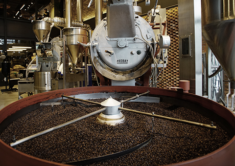
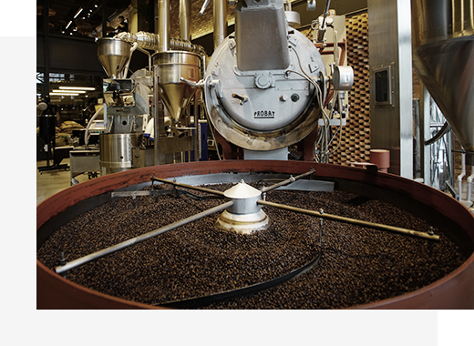
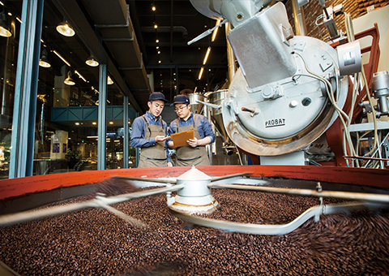
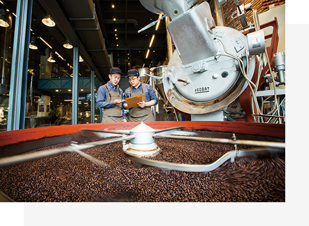
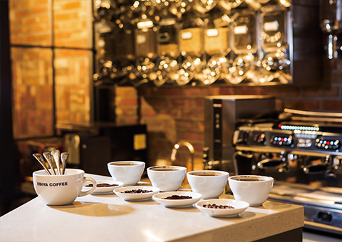
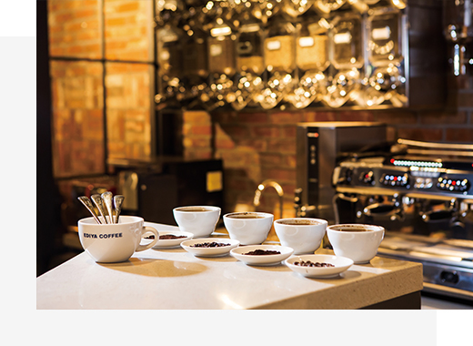

서비스 메뉴
지속가능한 브랜드로의 도전
이디야는 좋은 품질의 음료를 선보이기 위해,
원료의 본질부터 다양한 고객의 취향, 문화의 특성까지 연구합니다.
완벽한 커피를 찾는 여정, 이디야커피연구소
이디야 R&D 센터에서는 업계 최고의 전문가들이 모여 대한민국 모든 고객님들에게
편안한 휴식과 즐거움, 특별함이 담긴 커피 문화를 경험하실 수 있도록 끝없이 연구합니다.

-

커피의 품질을 결정하는 좋은 원두를 향한 집념

이디야커피의 비교할 수 없는 맛과 향은 연평균 20도의 변화가 적은 기후, 유기질이 풍부한 비옥한 화산질 토양의 커피벨트에서 재배되는 스페셜티 등급 원두의 까다로운 선별 과정에서부터 시작됩니다. 세계 각지에서 생산된 고품질의 생두는 산지 고유의 맛과 향을 지키기 위해 개발된 항온/항습 설비를 통해 보관되며, 생두별 프로파일링 시스템을 통해 최고의 커피 맛을 찾기 위한 연구 환경에 최적의 데이터를 축적해오고 있습니다.
-

사람 중심의 환경에서 최고의 커피 전문가가 만듭니다
이디야커피는 오직 커피만을 생각하는 좋은 사람들의 열정으로 만들어 집니다. 지속적인 교육 시스템의 개발과 연구 환경의 개선을 통해 이디야의 커피 전문가들은 더욱 편안하고 안락한 분위기에서 다양한 고객의 세심한 취향을 만족시키기 위한 새로운 아이디어를 연구합니다.
-

커피, 그 이상의 문화 이디야
이디야커피연구소는 단순한 커피, 그 이상의 문화를 만들기 위해 노력합니다. 고객들과의 진심이 담긴 소통, 전문 연구진과 R&D 부문의 지속적인 투자, 우수한 파트너 사와의 전략적 제휴를 통해 대한민국이라는 하나의 문화를 넘어 글로벌 브랜드를 향한 도전은 오늘도 계속 됩니다.
EDIYA COFFEE HISTORY
History of BARISTA
이디야 커피랩 바리스타 수상경력

완벽함을 즐기다
최고의 전문가들의 손 끝에서 탄생한 스페셜 커피와 프리미엄 원재료로 완성된 베이커리
이곳은 완벽을 실현하는 이디야커피랩입니다.
특별함을 만드는 커피연구소 안내


EDIYA COFFEE LAB
COFFEE & BEVERAGE
국내 정상급 바리스타가 선보이는 커피연구소의 시그니처 음료, 그 차이를 느껴보세요.


EDIYA COFFEE LAB
SPECIALTY COFFEE BEANS
엄선된 스페셜티 원두의 풍미를 최상으로 끌어낸 최고의 커피를 경험할 수 있는 공간
COFFEE BEAN


EXTRACT MACHINE


EDIYA COFFEE LAB
BAKERY
신선한 재료와 저온 숙성 공법으로 만든 프리미엄 베이커리와 정통 프랑스식 디저트 커피와 베이커리의 완벽한 조화를 경험하세요.